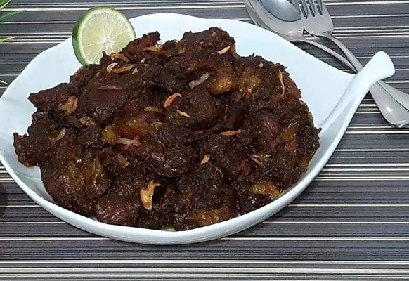

A Taste of Bengal
Bengali cuisine offers a vibrant explosion of flavors. Here are a few popular dishes:
Panta bhat: Panta bhat is a refreshingly tangy fermented rice dish originating from Bengal. It is typically served with a variety of side dishes such as fried fish, mashed potatoes (aloo bharta), green chilies, and pickles.

Kichuri: Kichuri is a popular and comforting one-pot dish made with rice, lentils, and assorted spices.

Biriani: Biriani is typically made with fragrant basmati rice, tender pieces of meat (like mutton or chicken), potatoes, yogurt, and fried onions.

Kalavuna: Kalavuna is a traditional Bangladeshi dish. It is a slow-cooked meat dish, usually made with beef, that is known for its deep, dark color and rich, aromatic flavors.

11 jater vorta: We serve different traditional vorta like: Aloo Bhorta (Mashed Potatoes), Begun Bhorta, Kumro Bhorta, Tomato Bhorta, Peyajkoli Bhorta, Chingri Bhorta, Shutki Bhorta, Muger Bhorta, Posto Bhorta, Bhorta of Pui Shak, and Taki Macher Bhorta.

Shorshe Ilish: Aromatic mustard fish curry, a Bengali classic.
Roshogolla: Soft cheese balls in sweet syrup, a delightful Bengali dessert.

Laban: Laban is a traditional and popular drink made with milk. This is so yummy drink.

Doi: Doi is made by fermenting milk with live bacterial cultures, which convert the lactose in the milk into lactic acid, giving yogurt its characteristic tangy taste and creamy texture.